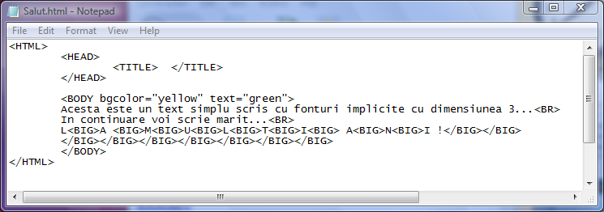
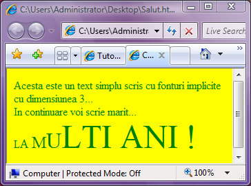

Scrierea marita
Pentru a scrie cu caractere marite cu o unitate fata de setarile
anterioare, blocul de text trebuie plasat intre etichetele BIG si
/BIG. Iata cum pot fi marite dimensiunile fonturilor, relativ la
dimensiunea anterioara:


Observatie: Dimensiunea fonturilor creste dar numai pana la atingerea
dimensiunii maxime, care este 7!!! La al doilea L din urare dimensiunea fontului
a ajuns la 7 iar in continuare nu mai poate creste.....
Inapoi la Formatare fonturi